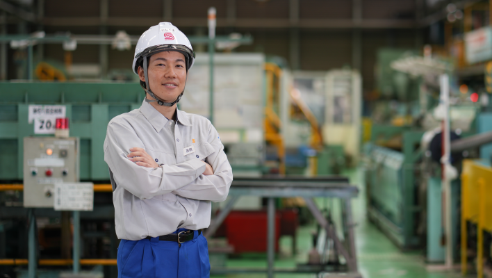
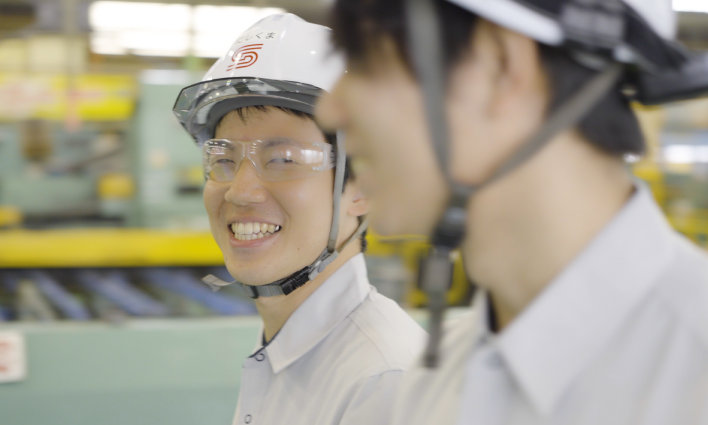
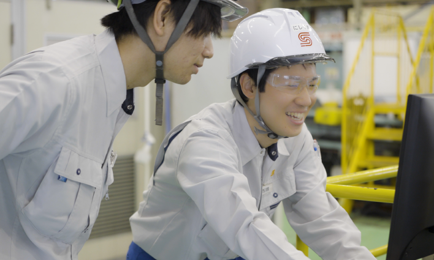
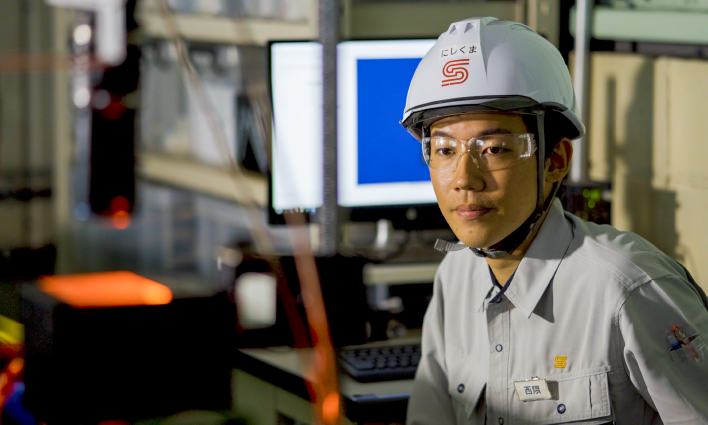
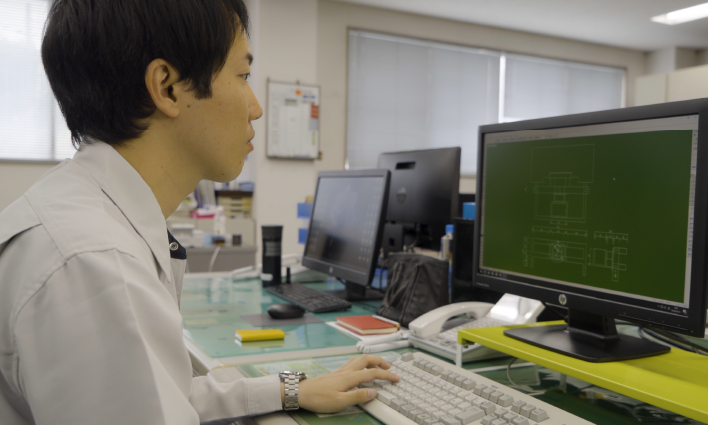

自分の考えを伝えられれば、
若手にも機会が。
大きな達成感を得られる仕事。

技術部（生産技術室）
Nishikuma Kousuke
西隈 光右／2021年入社
Q.入社の動機は？

「学生時代に学んだ材料系の知識を活かしたい」
私は高専から大学に進み、その間ずっと学んでいた材料系の知識が活かせる鉄鋼業界に進みたいと考えて就職活動を行っていました。当時ちょうどコロナ禍で、就職活動の期間もかなり短く、選択肢が多くはなかったのですが、工場見学に行った時の雰囲気や風通しの良い社風、目指していた鉄鋼業界であること、開発職に携われるといったことが主な決め手となり、当社に就職しました。
入社後も、最初に抱いていた風通しのよさそうな会社という印象が変わることはありませんでした。管理職のみなさんも、役職に関係なく相談に乗ってくれますし、先輩たちは「悩んでるくらいなら、さっさと相談しに来い」という感じで、頼もしく仕事のしやすい環境だと感じています。
私は高専から大学に進み、その間ずっと学んでいた材料系の知識が活かせる鉄鋼業界に進みたいと考えて就職活動を行っていました。当時ちょうどコロナ禍で、就職活動の期間もかなり短く、選択肢が多くはなかったのですが、工場見学に行った時の雰囲気や風通しの良い社風、目指していた鉄鋼業界であること、開発職に携われるといったことが主な決め手となり、当社に就職しました。
入社後も、最初に抱いていた風通しのよさそうな会社という印象が変わることはありませんでした。管理職のみなさんも、役職に関係なく相談に乗ってくれますし、先輩たちは「悩んでるくらいなら、さっさと相談しに来い」という感じで、頼もしく仕事のしやすい環境だと感じています。
Q.現在の業務内容は？

「生産技術や品質保証機器の開発改善」
生産技術関係のプロセスや品質保証機器の開発・改善を行っています。事務所のデスクでデータの取りまとめや、検証条件等を検討する業務と、実際に現場に出向いて、こういう検証をしたいと伝えてテストを実施する業務がだいたい半々という感じです。技術部門の仕事は、自分一人で何か完結することはなくて、生産現場のメンバーに協力してもらい、その中で改善を進めて行く形になります。
生産技術関係のプロセスや品質保証機器の開発・改善を行っています。事務所のデスクでデータの取りまとめや、検証条件等を検討する業務と、実際に現場に出向いて、こういう検証をしたいと伝えてテストを実施する業務がだいたい半々という感じです。技術部門の仕事は、自分一人で何か完結することはなくて、生産現場のメンバーに協力してもらい、その中で改善を進めて行く形になります。
Q.やりがいを感じる瞬間は？

「現場の改善につながり感謝の声をかけられた時」
現場の社員と話すと、業務の能率や品質はもちろん、現場で各自の作業が短縮されたり、負担が軽減されたりした時に、非常に感謝されます。私の携わった改善によって、そうしたメリットが生まれ、改善策や機器を「今も使ってるよ」と声をかけてもらえると、やってよかったなと自信につながりますね。
一方で、外部の企業の方と話すと、自分の会社の事をまだまだ把握しきれていないと感じる事が多々あります。自社の技術の詳細や、これまでの改善内容などをしっかりと説明できるようになって初めて、一人前の技術者としてもっと自信がもてるようになるのではないかと思っています。
現場の社員と話すと、業務の能率や品質はもちろん、現場で各自の作業が短縮されたり、負担が軽減されたりした時に、非常に感謝されます。私の携わった改善によって、そうしたメリットが生まれ、改善策や機器を「今も使ってるよ」と声をかけてもらえると、やってよかったなと自信につながりますね。
一方で、外部の企業の方と話すと、自分の会社の事をまだまだ把握しきれていないと感じる事が多々あります。自社の技術の詳細や、これまでの改善内容などをしっかりと説明できるようになって初めて、一人前の技術者としてもっと自信がもてるようになるのではないかと思っています。
Q.就職活動生へのメッセージは？

「一つのテーマに最初から最後まで携われる面白みがある」
当社の規模ならではと言えるかもしれませんが、一つのテーマに対して、最初から最後までずっと一人で携われるというのが、当社の技術開発職の魅力だと思います。大企業だと、プロジェクト全体の規模は大きくても、部分的な仕事にしか携われない場合もあると思うので。最初から最後まで自分一人で遂行できるというのは、その分大きな達成感も得られると思います。
また、私のように入社3年目の若手社員の意見でも、自分の考えをきちんと説明できれば、上司はちゃんと理解を示して「やってみろ」と背中を押してくれます。ですから、自分の考えを持って何かを創り出す、技術開発系の仕事に興味や面白みを見出せる人にはおすすめの会社だと思いますね。
当社の規模ならではと言えるかもしれませんが、一つのテーマに対して、最初から最後までずっと一人で携われるというのが、当社の技術開発職の魅力だと思います。大企業だと、プロジェクト全体の規模は大きくても、部分的な仕事にしか携われない場合もあると思うので。最初から最後まで自分一人で遂行できるというのは、その分大きな達成感も得られると思います。
また、私のように入社3年目の若手社員の意見でも、自分の考えをきちんと説明できれば、上司はちゃんと理解を示して「やってみろ」と背中を押してくれます。ですから、自分の考えを持って何かを創り出す、技術開発系の仕事に興味や面白みを見出せる人にはおすすめの会社だと思いますね。